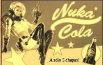
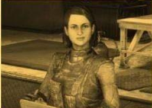
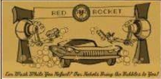

Llega el Parche de Inventario
Este nuevo parche llega a Fall out para ayudar a organizar mejor las cosas del inventario entre otras cosas a continuación las novedades mas importantes:
Aumento del alijo, de 800 a 1200
Nuevas pestañas en el Pip-Boy. ahora armaduras y atuendos están por separado y comida y bebida estan separadas de ayuda, lo cual agilizara mucho la busqueda de nuestros objetos. Tambien se inrcorpora la pestaña " nuevo" donde encontraremos los ultimos items reocgidos en la sesion actual ordenados en el orden que se recogen.
Nueva funcion peso apilado nos muestra el peso total de un item que tengamos en cantidad (Tip: atentos con los items de ayuda y comida y bebida, que suelen ser los que mas se acumulan sin darse cuenta !).

Tambien encontraremos las mejoras en la interfaz de la vista en mapa de las maquinas vendedoras de jugadores. Ahora aparecen diferenciadas armas y armaduras por cantidad de estrellas legendarias, lo cual sin duda nos ahorra muchos viajes rapidos

Operaciones Diarias
A partir de esta actualizacion al completar una operacion diaria aclanzando el rango "Maestre" se garantiza la obtencion de almenos un objeto de entre las recompensas poco comunes.
Conocimiento Prohibido
La conocida mision secundaria ha sido reactivada luego de haber solucionado los problemas con los datos tecnivos y ahora no solo pueden depositarse en Campamento Aventura, tambien son recibidos en Fuerte Atlas por la escriba Odessa Valdez de la Hermandad del Acero, a quien vemos en la siguiente imagen.
Consejo diario: no olvides llevar siempre un poco de Rad-X por si te topas con una tromenta radiactiva ;-)
Novedades en TIenda Atomica
En la tienda atomica se añadio una opcion que muestre solo los items que no hemos comprado, para facilitar la navegacion y mejorar la visualizacion.
Esta senaba ecibtraremos las siguientes novedades:
Camara de Habitaciones de Regugio 1500 atomos
Conjunto de sogfas modulares
500 atomos
Servoarmadura de Ranger del Parque 1200 atomos
Ademas de muchas ofertas entre las que destacan los letreros de Quantum, Old Possum y Pickaxe, Conjunto de bar elegante, Conjunto de barra de Slocum´s Jose, entre otras

Evento por tiempo limitado!
--------------------"Muero de Amor"